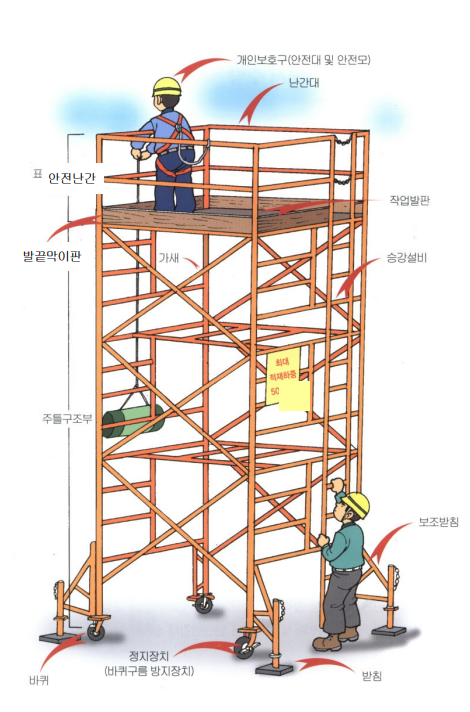

이동식비계
위험포인트
▶이동식 비계 승강설비 미설치에 의한 승강 도중 추락위험
▶이동식 비계 바퀴 구름방지 미조치에 의한 틀비계 밀림으로 인한 추락위험
▶이동식 비계 위에서 작업 중 안전난간 미설치 의한 추락위험
▶이동식 비계 전도방지 조치 미실시에 의한 틀비계 전도로 추락위험
▶이동식 비계 위에 높은 디딤판 사용에 의한 추락위험
이동식 비계 사용시 안전대책
○설치기준
-성능검정 합격한 주틀 및 각륜, 교차가새 사용, 조립
-2단 이상 작업시 틀비계 고정용 아우트리거 설치
-승,하강용 사다리 설치
-부재의 접속부나, 교차부는 확실하게 연결
○작업발판 설치
-성능검정 합격품 사용, 2개소 이상 고정
-발판 단부에 이동식 틀비계용 안전난간 설치
○개인보호구(안전모, 안전대)착용
○설치높이: 밑변 최소길이의 4배 이하
○적재하중(W): 비계의 바닥면적 넓이에 따라 다음 값 이하로 사용
-바닥면적 ≥ 2㎡ 일 때, W = 250kg 이하
-바닥면적 < 2㎡ 일때, W = 50+100X바닥면적(㎡)kg 이하
